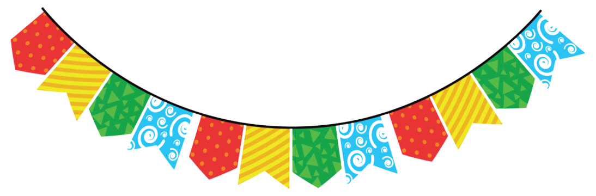

WikiJunino
Início
História
Comidas
Brincadeiras
Referências
Viva a Magia do São João
Bem-vindo!
Explore a cultura e a alegria das festas juninas brasileiras.
Explorar História

A maior celebração regional do Brasil